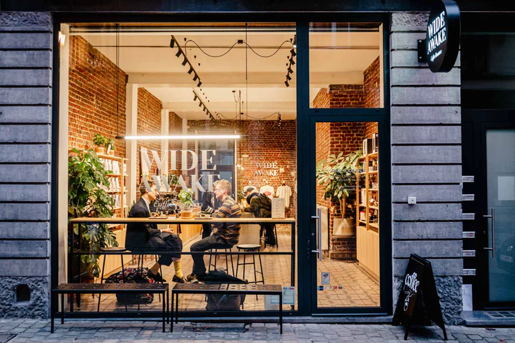

About
Our Approach
Our coffees are released on our 11 series. Each has a distinct flavor profile and has 4 microlot releases per year. Together, the series offer a mixed range in taste and origin and provide guidance to our longtime customers. Each series comes with a unique graphic identity and is named after a pop culture icon we love.
Cafés
Visit out shops

St Catherine
Our flagship café and shop in the Brussels city centre. We offer an extensive coffee menu paired with freshly prepared pastries and lunch options.
rue Sainte-Catherine 2, 1000 Brussels
Get directionsFlagey
A contemporary interpretation of a fast-paced espresso bar. Try standard and world class espresso options in our charming corner shop.
rue Lesbroussart 34, 1050 Ixelles
Get directions

Dansaert
Our original roastery was transformed to a brew bar in 2022. Try all our coffees on hand brew or espresso in an intimate, slow environment.